喜羊羊与灰太狼
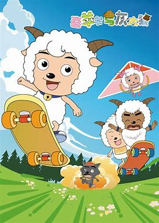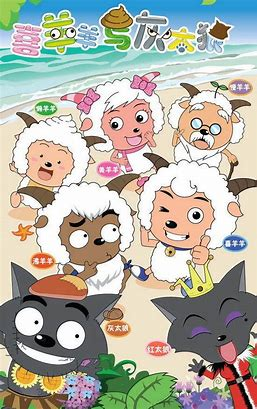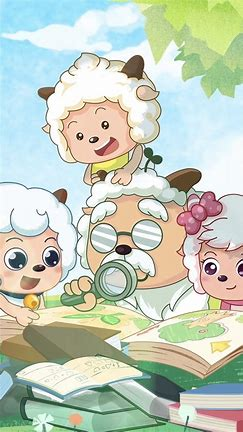
动画内容
首播时间：2005年8月3日
正剧第一季，共530集（包括60集的《古古怪界大作战》），每集14.5分钟
全剧简介：
羊历3513年，青青草原上，羊羊族群十分繁荣昌盛，羊羊们在这里幸福地生活着。直到灰太狼带着妻子红太狼搬到对岸的森林，羊羊们才真正在现实中见到书上记载的狼。 灰太狼每天想尽办法要跨越铁栅栏抓羊，但他没想到的是，他的对手是全羊族里最聪明的喜羊羊，而且喜羊羊的背后还有智慧超群、又擅长发明的村长慢羊羊；大智若愚，馋嘴爱睡的懒羊羊；力大无比，勇敢无畏的沸羊羊；心地善良、气质非凡的美羊羊；以及温柔可爱，做事负责的暖羊羊。 善良勇敢的小羊们，凭借着智慧和勇气，一次次识破灰太狼的阴谋诡计。但灰太狼为了家人，也勤奋努力，百折不挠地捉羊，一次次失败，但又一次次站起。就这样，妙趣横生的狼捉羊故事，在青青草原不断上演。 [1]
《喜羊羊与灰太狼之古古怪界大作战》部分（全剧第281-340集）简介：
阳光明媚的一天，灰太狼和他老婆红太狼又一次向羊村发起攻击。不过这次灰太狼祭出了他的制胜法宝——可以把小羊瞬间烤熟的阴离子光球。一时间羊村大乱，灰太狼无往不利。关键时刻，喜羊羊拿来了村长的阳离子光球。结果两个光球发生激烈碰撞，导致时空严重扭曲，羊羊和灰太狼全部被卷入时空漩涡之中。当他们再次睁开眼，发现自己正置身一个鲜花盛开、和风送暖的美丽世界。羊羊们从蜜蜂皇后的口中得知，这里名叫古古怪界，一百年前曾有一个恶魔在此作乱，最终被蜜蜂的祖先封印在巨蛋之中。不凑巧的是，灰太狼夫妇无意中解开巨蛋的封印，恶魔黑大帅获得自由，并发誓毁灭光明道具，统治古古怪界。
为了阻止他的阴谋，羊羊们在自称先知的潇洒哥的帮助下，与黑大帅展开惊险刺激的对抗。
羊族
主要角色
喜羊羊
青青草原上最聪明的小羊，羊村里跑得最快的羊，身手敏捷，
敢作敢当且对朋友有情有义，不过性情有些急躁，常常不听
别人说完就行动。
在S19中与灰太狼成为好朋友，并实现狼
羊和平.
美羊羊
羊村里最美丽善良的羊。
懒羊羊
青青草原上最可爱的小羊，同时也是很幸运的小羊，每次遇到
危险时，都能化险为夷。一旦闻到食物的香味，马上会被吸
引过去
沸羊羊
他身强力壮，但很鲁莽，做事容易冲动。怕蟑螂。
暖羊羊
羊村里公认的“热心羊”，大肥羊学校的班长，乐于助人。
慢羊羊
羊村的村长，博览群书，聪明绝顶。
| 角色 |
喜羊羊 |
美羊羊 |
懒羊羊 |
沸羊羊 |
暖羊羊 |
慢羊羊 |
| 配音 |
祖晴 |
邓玉婷 |
梁颖 |
刘红韵 |
邓玉婷 |
高全胜 |
狼族
灰太狼
武大狼第250代孙子，红太狼的丈夫，小灰灰的父亲，黑太狼
和银太狼的儿子。一个怕老婆但却爱老婆的狼。曾为狼王身份
但却毫无地位甚至屡次吊销狼籍……平时爱钻研抓羊办法，是个
永不言败的发明家；一直想吃羊却永远失败，被小羊捉弄。从
S19开始与喜羊羊成为好朋友，并实现狼羊和平。

红太狼
灰太狼的老婆，小灰灰的妈妈。

小灰灰
灰太狼和红太狼的儿子，黑太狼和银太狼的孙子。
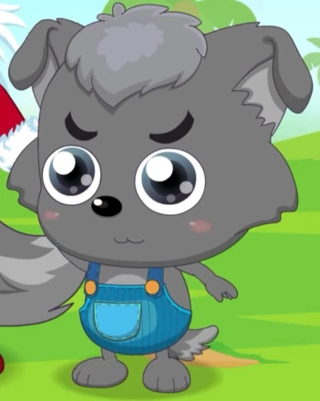
| 角色 |
灰太狼 |
红太狼 |
小灰灰 |
配音 |
张琳、刘红韵（幼年） |
赵娜 |
梁颖 |
片段提取
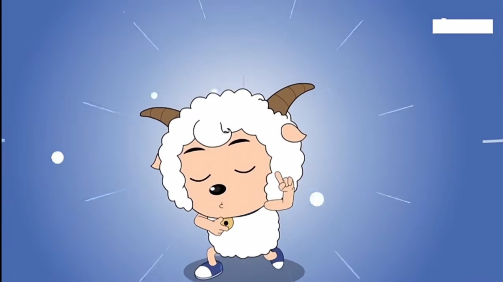
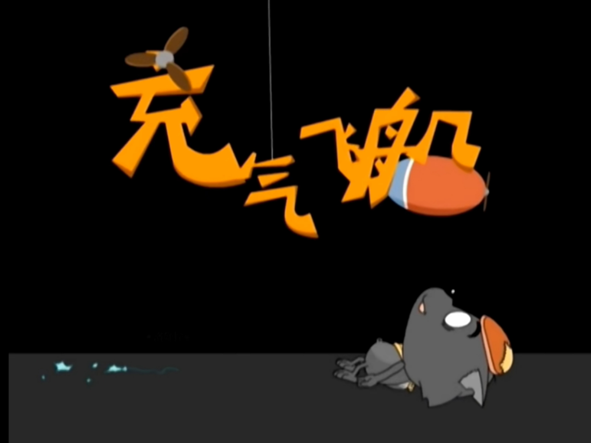
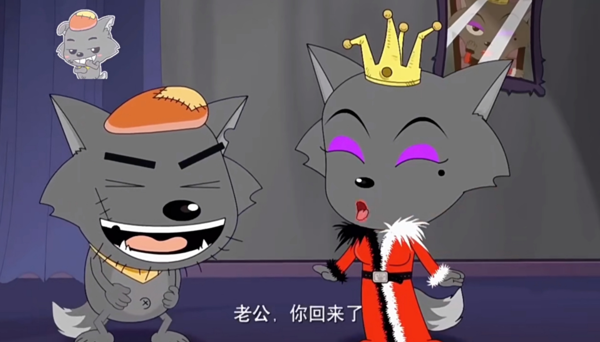
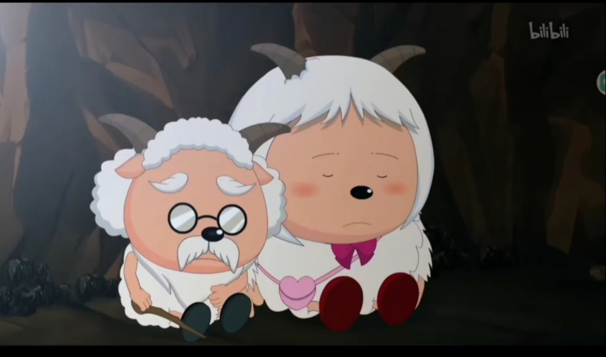
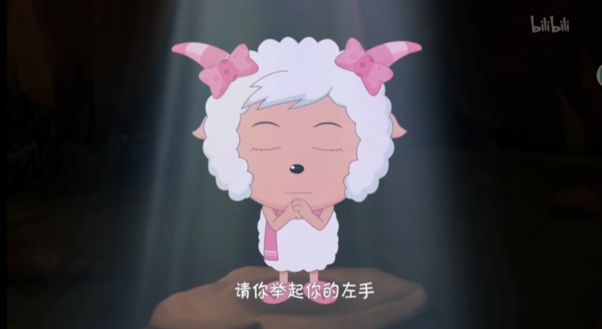
电影系列
电影一 牛气冲天
又是新的一年，灰太狼喜上加喜，和老婆红太狼得了宝贝儿子小灰灰。为了给至今未开羊荤的小灰灰打打牙祭，灰太狼再次踏上了前往羊村的征程。此时羊村正在举行百年庆典，但是村长慢羊羊的坐骑蜗牛突然出现异样，经验丰富的村长马上意识到100年前的瘟疫将再次席卷青青草原。为了拯救羊村、替村长排忧解难，喜羊羊他们利用缩小药水进入蜗牛的体内，而灰太狼也尾随而入。谁知他们却分别遭遇了白牛军和黑牛军，一场新的冒险由此展开……
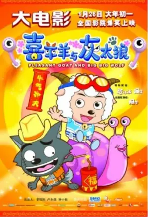
电影二 虎虎生威
在一个月黑风高的夜晚，灰太狼和一众同伴相约，杀进羊村捕捉小肥羊，为老婆和孩子送上情人节的饕餮大宴——涮羊锅。与此同时，羊村正在举行大白菜成功培育一千周年的庆典，节日的欢乐气氛却被突如其来的灰太狼所破坏。正当灰太狼与喜羊羊激战正酣之际，狂暴骄纵的虎威太岁率领众多手下来到羊村，扬言要在这里修建游乐场。转眼之间一座豪华的游乐场拔地而起，小肥羊们被迫沦为这里的工人，连高傲自大的灰太狼也难以幸免。面对这个突如其来的虎威太岁，羊羊和灰太狼被迫联手……
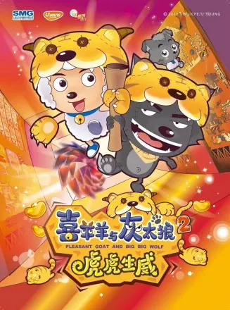
电影三 兔年顶呱呱
又是一年春节临近，灰太狼的心中却感受不到半点喜悦。反倒是无比悲凉，老婆红太狼身怀六甲，小灰灰日渐长大，嗷嗷待哺。偏偏灰太狼逮羊的业绩太差，狼堡因此遭到强拆。种种变故，让这个四口之家的顶梁柱叫苦不迭。为了扭转局势，灰太狼带领老婆孩子向羊村开始了绝地大反攻。与此同时，青青草原迎来了不速之客——来自月球的兔小乐。从他的口中，羊羊们得知原本为五彩斑斓的糖果所包围的月球被邪恶的苦瓜大王所占领，而喜羊羊更知晓了关于父母的一切。为了找回美丽的糖果世界，羊羊们随着兔小乐飞赴月球，而灰太狼一家也阴差阳错被带了过去。一场全新的冒险就此展开……
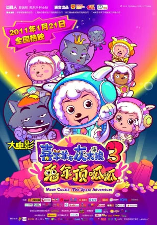
电影四 开心闯龙年
平静的一天，喜羊羊、沸羊羊在追逐一个神秘之人的过程中遭到了灰太狼以及恐怖的机械大黑龙的攻击。在此之后，他们得到来自龙乐园的5个小家伙：变色龙、钻地龙、濛濛龙、七窍玲龙和轰龙龙的救助。从变色龙的口中得知，龙乐园遭到机械大黑龙无情的袭击，另一国度的危机也间接影响到了宁静祥和的青青草原。与此同时，喜羊羊的父母也在时空旅行中遭遇意外。为了让龙乐园和青青草原恢复原状，也为了拯救智羊羊和丽羊羊，羊村的小伙伴全副武装前往龙乐园寻找传说中的龙笛。原本打算去丈母娘家避难的灰太狼，也意外卷入了这场新的冒险之中……
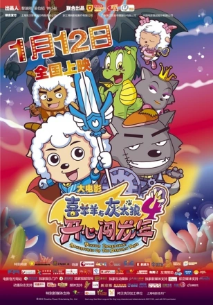
电影五 喜气羊羊过蛇年
在晴朗明媚的一天，羊村正举行羊村超级防御系统揭幕仪式，这是慢羊羊村长的最新发明，该系统可以抵制上千伏的电压。谁知这时灰太狼突然出现搅局，不久前他发明了羊味罐头，由此成为当今最炙手可热的科学家，可是没能抓到小羊依然是他心中隐隐的伤痛。灰太狼用天气魔方操纵天气与羊羊特工队展开殊死搏斗。受伤的喜羊羊偶然结识了熊猫旺财，而对方的真实身份是灭绝了许久的蛇。受挫的灰太狼专心升级天气控制器，却忽略了老婆和小灰灰的感受，而他的失误也导致天气控制器失控。危难时刻，青青草原的各位意外发现久远以前蛇族发明的诺亚神舟。可是为了启动神舟，必须得到蛇族的帮助。为此，羊羊特工队和机械喜羊羊踏上凶险莫测的冒险旅程……
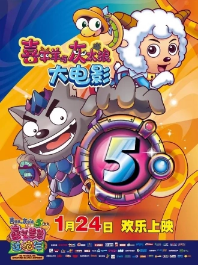
电影六 飞马奇遇记
在经典的童话故事里，如梦如幻、色彩斑斓的天马城，英俊的飞马王子即将迎娶美丽的蓝马公主，谁知婚礼现场却被抢婚的小矮马所破坏。飞马王子在追逐小矮马的时候遭遇意外，坠落到了青青草原。与此同时，草原上这个经典童话的结局也发生了改变。为了让痛哭流涕的大人们重新振作起来，也为了帮助飞马王子找回真爱，喜羊羊、美羊羊、懒羊羊、暖羊羊、沸羊羊以及小灰灰拿到了村长发明的飞行套装。在那个皓月当空的美丽夜晚，他们与飞马王子一同飞上天空。在此之后，灰太狼和红太狼也紧随其后出发。
悲哀的童话能否找回快乐的结局？新一年的旅程，这些好朋友们又将经历怎样的冒险？
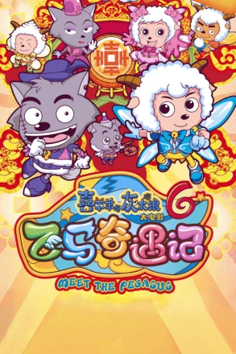
电影七 喜羊羊与灰太狼之羊年喜羊羊
青青草原上流传着一个远古时代“屠龙勇士”的传说，大家都十分向往。喜羊羊与懒羊羊这对儿时的玩伴也从小梦想着成为这样的勇士。可是有一天，这对患难朋友的关系却产生了裂痕！
原来十年前，幼年的懒羊羊曾经救过喜羊羊一命，喜羊羊真诚地给懒羊羊“颁发”了一块用饼干罐做成的奖牌！这是懒羊羊十年来唯一的一次荣耀，所以十分珍惜。可是，喜羊羊竟把这件事忘得一干二净，并在一次与灰太狼的战斗中损毁了这个奖牌，这让懒羊羊伤心不已！
为了让喜羊羊知道自己是真正的勇士，懒羊羊决意前往狼堡单挑灰太狼，谁知竟与灰太狼互换了身体！他们与追来的喜羊羊一起被时光相机送回了远古时代。
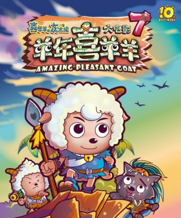
电影八 筐出未来
喜羊羊、灰太狼与一众小羊组成的守护者队进入篮球顶级赛事都市篮球杯决赛，喜羊羊和灰太狼却因为一球之争关系破裂，导致球队惨遭败北，团队分崩离析。虽然各散东西，但对篮球的热爱和对冠军的渴望让大家再组队，众人一起经历成长，再战新一届都市篮球杯，然而这次的对手更强大，他们将面临更大的挑战。
电影九 守护
导演：黄俊铭、陈力进
自然界中的神奇宝石维护着世界的稳定和平，一股神秘力量正蠢蠢欲动，危机四处蔓延。众羊狼与新伙伴再踏上守护世界的征途，争分夺秒与神秘势力的阴谋赛跑，并在一次次的冒险与闯关中共同成长，最终明白了守护的意义。
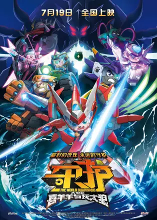